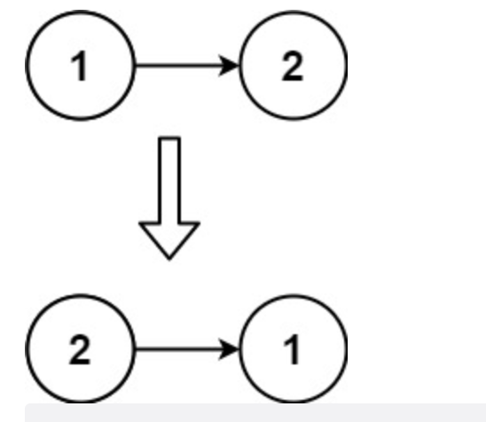

206. 反转链表
题目
给你单链表的头节点 head ，请你反转链表，并返回反转后的链表。
示例
示例 1:

输入：head = [1,2,3,4,5]
输出：[5,4,3,2,1]
示例 2:

输入：head = [1,2]
输出：[2,1]
示例 3:
输入：head = []
输出：[]
提示：
- 链表中节点的数目范围是
[0, 5000] - -5000 <=
Node.val<= 5000
进阶
链表可以选用迭代或递归方式完成反转。你能否用两种方法解决这道题？
解题思路
思路
我们可能第一时间想到的解决思路是再使用一个新的链表，然后遍历原链表，然后在新链表中每次插入链表头即完成了反转， 但是这必然会造成空间的浪费，所以我们要考虑的还是去做到原地反转。
仔细想一想, 其实遍历的时候，只需要把下个节点的next反向指向前一个节点，依次这样完成即可。不过，需要注意的是: 遍历后头结点将变成尾结点，所以必须从头结点开始，且头结点的next指向nil.
实现
迭代法
func reverseList(head *ListNode) *ListNode {
// 重点是: cur_node初始化是从头结点, 然后pre_node是空指针
cur_node := head
var pre_node *ListNode
for cur_node != nil {
next_node := cur_node.Next
cur_node.Next = pre_node
pre_node = cur_node
cur_node = next_node
}
return pre_node
}
递归法
func reverseList1(head *ListNode) *ListNode {
return reverse_dg(nil, head)
}
func reverse_dg(pre *ListNode, cur *ListNode) *ListNode {
if cur == nil {
return pre
}
next := cur.Next
cur.Next = pre
return reverse_dg(cur, next)
}